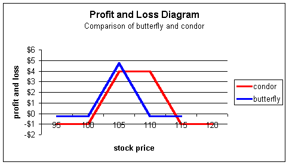
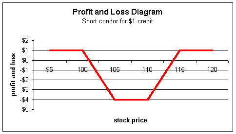
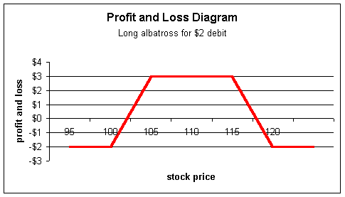
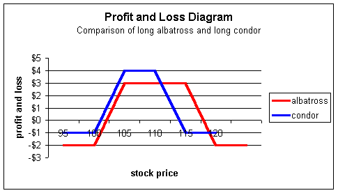
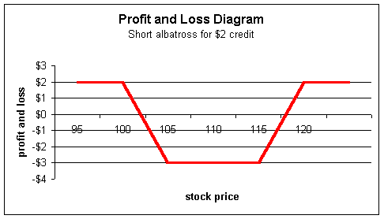
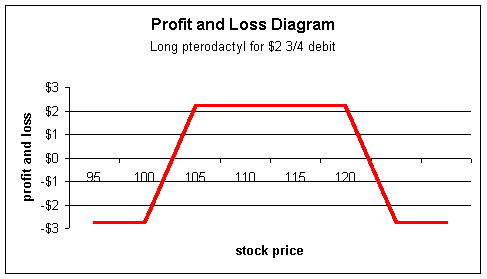

Condor
Condor, albatross, pterodactyl spreads
Once again, the traders have given some creative names to another class of wingspreads -- strategies with profit and loss diagrams resembling wings. The condor, albatross and pterodactyl spreads are all similar to the butterfly spread (please see "Butterfly Spreads" for more information) except each of these strategies sells multiple strikes.
It should be noted that, like the butterfly, these spreads are really meant to be used as floor trader tools for hedging and taking advantage of small pricing discrepancies that periodically appear in the market. Because of the large number of strikes involved, the commissions usually make these losing strategies for retail investors.
This does not mean that you should not take the time to understand them. They will increase your knowledge of options and give insights into the versatility of options by showing how strategies can be stacked on one another.
Condor spread
The condor spread is a strategy involving four strikes and can be made up of calls, puts or a combination of both. The basic condor spreads are usually constructed with either calls or puts.
To execute a basic condor spread, a trader needs four strikes, which we will call S1, S2, S3 and S4 with each strike being successively higher and having the same expiration. The trader will be long S1, short S2, short S3, and long S4. For example, the trader may be long the $100 call, short the $105 call, short the $110 call and long the $115 call. Notice how each strike is successively higher. It is not necessary to have them separated by five points, though. You could construct one with a long $100 call, short $110 call, short $120 call and long $130 call -- as long as the strikes are evenly spaced. From a profit and loss standpoint, the condor spread looks like this:

The trader will maximize profit between the two short strikes, $105 and $110 in this example. For stock prices below $105 or above $110, the trader will start to lose profits and eventually end up negative if the stock falls below $101 (low break-even point) or rises above $114 (the high break-even point). Any stock price below $100 or above $115 produces the maximum loss of $1 -- the cost of the spread.
Notice how the condor is similar to a butterfly where the trader buys a low strike, sells two medium strikes, and buys one high strike. The condor is the same basic pattern except the trader is splitting the two medium strikes of the butterfly into two separate strikes. This action creates a wider profit area relative to the butterfly. The trader is hoping for a relatively stable stock price. The following chart shows a comparison between the condor and butterfly:
Notice how the butterfly (blue) has a higher profit but, in return, gets into loss territory quicker. The condor (red) has a lower, but wider, profit area and takes longer to head into losses. The markets realize the condor is therefore more desirable and will bid its price up.
Again, market makers are probably the biggest users of condors as they pay very little in commissions and can make it worth their while to pay four commissions to enter the condor and four to exit.
Why do market makers use them?
To understand them, we need a refresher on butterflies. If you read our section on butterfly spreads, you will recall that market makers are actually spreading spreads -- they buy the bull spread and sell the bear spread. For example a basic call butterfly has this pattern:
Strike 100 105 110 115 120 125
Call butterfly +1 -2 +1
In other words, the long butterfly trader is long the $100 call, short 2 $105 calls and long the $110 call. If the stock is at $105-1/2, the $100/$105 bull spread (long $100, short $105) should be more valuable than the $105/$110 bear spread (short $105 and long $110). If, for some reason, the markets are pricing them equally, market makers will buy the bull spread and sell the bear spread making them long the butterfly. For the same reasons traders buy spreads (buy one call and sell another), traders will spread spreads, which is a butterfly.
With condors, market makers are actually laddering butterfly spreads; that is, they buy one set of butterflies and buy a successively higher set of butterflies.
Strike 100 105 110 115 120 125
Call butterfly #1 +1 -2 +1
Call butterfly #2 +1 -2 +1
Net position +1 -1 -1 +1 = condor
spread
A trader may see a theoretical discrepancy between the $100/$105 bull and $105/$110 bear spread and want to buy butterfly #1 above. In addition, there may be another discrepancy between the $105/$110 bull and $110/$115 bear, so they may desire to purchase that one as well. With one condor, all pricing discrepancies between the two butterflies are captured!
A short condor will be the mirror image of the long position and, consequently, have opposing profits and losses. Using the same example above, to execute a short condor, the trader will be short $100 call, long $105 call, long the $110 call, and short the $115 call. The short condor looks like this:
With the short condor, the trader will make maximum profit if the stock makes a large move in either direction. In this example, if the stock is below $109 or above $114, the break-even points, the trader will keep the initial $1 credit. If the stock is between $100 and $115, the position will start to lose profits, and eventually end up at a maximum loss of $4 if the stock is between $105 and $110 -- the strikes of the two long positions.
Albatross spread
The basic long albatross is a strategy utilizing four strikes just as the condor. However, the trader skips a strike in the middle. Using the earlier notation, a long condor trader will be long S1, short S2, short S3, long S4, but skip a strike between S2 and S3. For example, a trader who is long the $100 call, short $105, short $115, long $120 is long an albatross spread.
From a profit and loss standpoint, the long albatross looks like this:
It has a wider but lower profit zone relative to the condor. This reflects the relative risks of the two strategies. All else equal, traders would prefer to have wider ranges of profit so will bid this strategy higher relative to the condor. This can be seen if we overlay the two profit and loss diagrams:
The trader will profit for any stock price above $102 and below $118, the break-even points. Maximum profit will be realized for stock prices between $105 and $115. Similar to the condor trader, a long albatross position is betting on a fairly stable stock price; however, the albatross trader has more room for error.
As with the condor, the albatross is a continuation of the laddering of butterfly spreads. For example, the following chart shows the trader who is long an albatross spread is effectively long the $105, $110 and $115 butterflies.
Strike 100 105 110 115 120 125
Call butterfly #1 +1 -2 +1
Call butterfly #2 +1 -2 +1
Call butterfly
#3 +1 -2 +1
Net position +1 -1 0 -1 +1
= albatross spread
The short albatross, of course, will be the opposite of the long position. Here, the trader is betting on a very large move, either up or down, in the underlying.
Pterodactyl spread
As you probably guessed, the pterodactyl spread is just a continuation of the albatross. It still involves four strike prices but, this time, two strikes are skipped in the middle. A trader who is long $100 call, short $105 call, short $120 call, and long $125 call is long a pterodactyl. The profit and loss diagram looks like this:
|
 The albatross trader has an even lower, but wider, range of profits compared to the albatross. The trader, in this example, will be profitable for any stock price above $102 3/4 or below $117-1/4, the break-even points. Maximum profit will be realized for stock prices between $105 and $120. As shown in the following chart, the pterodactyl spread is a laddering of four butterfly spreads:
Strike 100 105 110 115 120 125 Notice in the following chart how each spread -- the condor, albatross, and pterodactyl -- reflects the relative risks of each position. The strategy with the highest profit potential will be the cheapest one to purchase. Sometimes new traders find this confusing and think the highest profit strategies should be the most expensive, as those are the ones everybody wants and will bid the price higher. This is incorrect, as the highest profit strategies are also the riskiest. In order to make them worth the risk, the market must reduce the price.
|